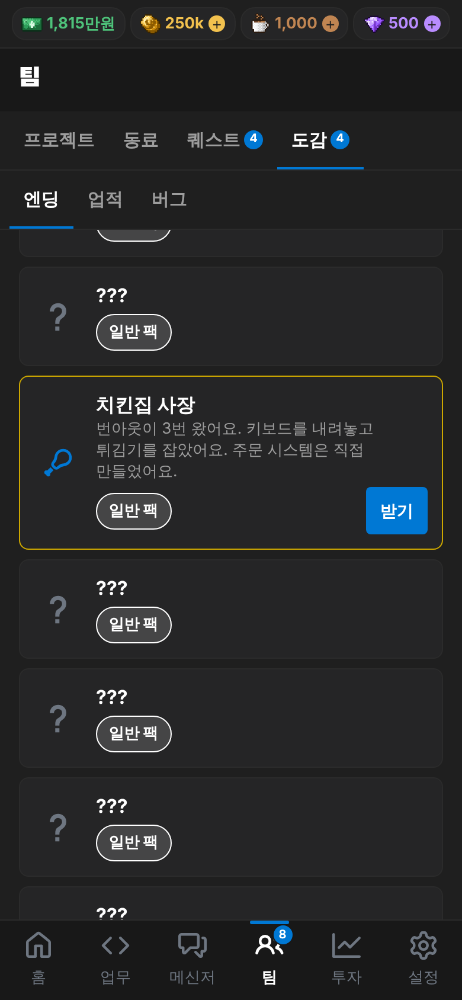
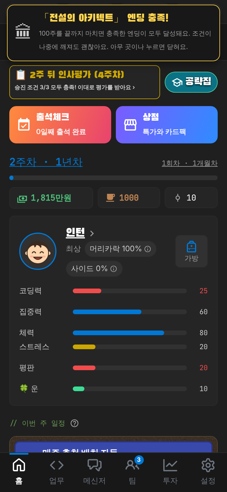
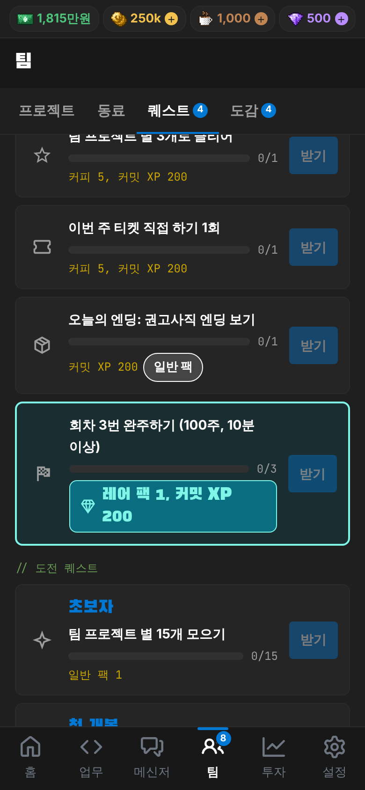
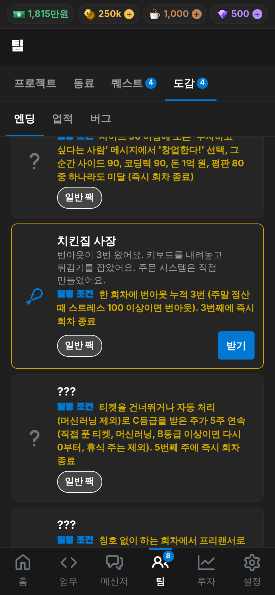
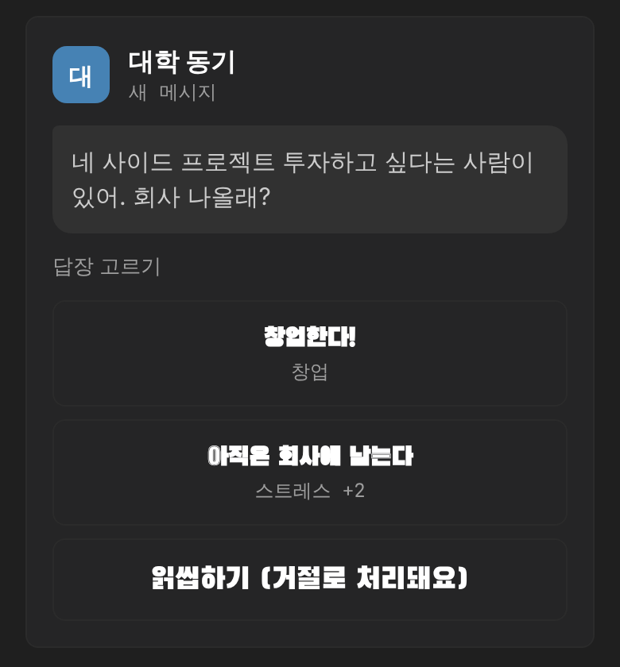
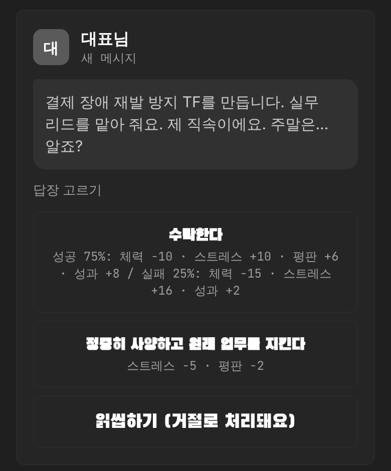
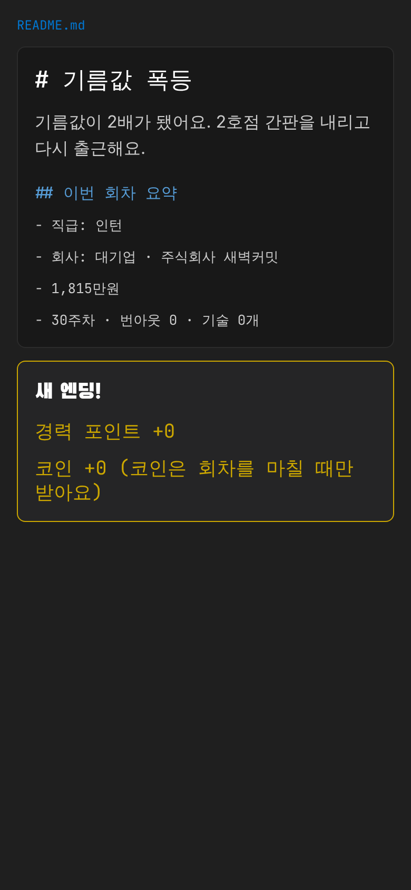
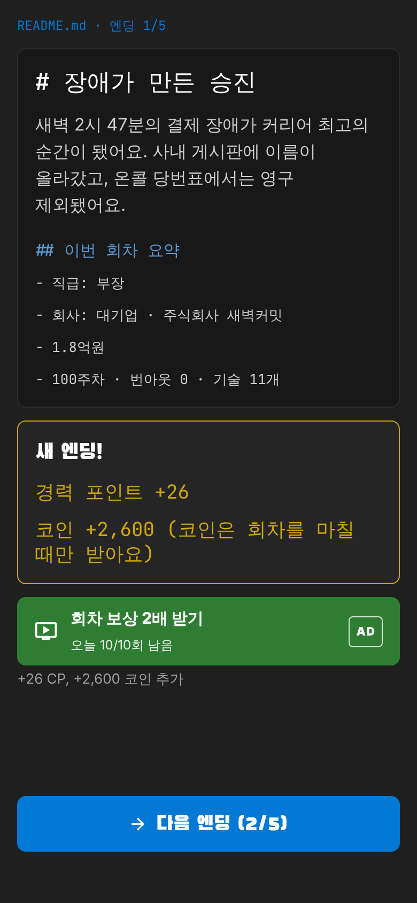

공략집 › 엔딩 도감
엔딩 도감
엔딩 137개의 조건·보상·난이도와 한 회차에 같이 노리는 조합 총정리 (숨김·희귀 엔딩은 스포일러 접기)
- 📖 엔딩은 전부 137개예요. 기본 엔딩 95개 + 칭호 엔딩 42개. 도감은 팀 탭 → 도감 → 「엔딩」에 있어요.
- 🎯 100주를 끝까지 마치면 도중에 「엔딩 충족!」이 뜬 엔딩이 전부 같이 기록돼요. 한 회차에 6~10개씩 모으는 게 고인물의 기본기예요.
- ⏹️ 대신 치킨집 · 권고사직 · 창업 · 칭호 엔딩처럼 회차가 그 자리에서 끝나는 엔딩은 그 하나만 남아요.
- 🎁 처음 보는 엔딩마다 카드팩(기본 엔딩 레어 팩, 칭호 엔딩 에픽 팩) + 도감에서 엔딩 하나마다 「받기」 보상이 또 있어요. 수집률 보상은 없어요.

엔딩은 이렇게 모여요 🧭#
엔딩 도감을 채우려면 먼저 「엔딩이 언제, 어떻게 기록되는지」부터 알아야 해요. 이거 모르고 돌리면 다 된 회차를 날리기 딱 좋거든요 😇
엔딩 종류 4가지#
| 종류 | 언제 기록돼요? | 예시 |
|---|---|---|
| ⚡ 도중 충족 | 조건을 맞춘 그 주(주 마감이나 답장 직후)에 「엔딩 충족!」 배너가 뜨고 기록 예약. 나중에 조건이 깨져도 100주만 마치면 인정 | 전설의 아키텍트, 슈퍼개미, 사이드 엔딩 3개, 회사 사가 12개, 섬 주인 3개, CTO |
| 💍 100주 판정 | 100주차 마지막 주에 그 상태여야 기록. 중간에 헤어지거나 이혼하면 무효 | 결혼 · 연애 · 동거 · 신혼 · 취향 · 아이 · 내조 · 이혼 · 어장 엔딩, 풍성한 모발 |
| 🌫️ 조용한 엔딩 | 배너 없음. 100주차에 최종 엔딩이 될 때만 기록(앞 순위 엔딩이 하나도 없을 때) | 평범한 개발자, 만년 대리, AI에게 자리를 넘김, 귀농 개발자, 워라밸 마스터 |
| ⏹️ 즉시 종료 | 그 자리에서 회차가 끝나고, 그 엔딩 하나만 기록(도중에 충족한 다른 엔딩은 사라져요) | 치킨집 사장, 권고사직, 창업 대박 / 창업, 그리고 폐업, 칭호 엔딩 전부(100주에 나오는 버텨낸 창업가만 빼고), 텅장 창업, 아침 커밋 재직 중 징계 해고 |

90주까지 아키텍트 · 슈퍼개미 · 사가 엔딩을 다 충족해 놓고 번아웃 3번째가 터지면 치킨집 사장 하나만 남아요. 칭호 엔딩 답도 마찬가지예요. 욕심 회차는 끝까지 스트레스 관리, 그리고 칭호 엔딩 답은 「이번 회차는 이걸로 끝」이라는 각오로 누르세요.
보상: 2번 받아요 🎁#
| 보상 | 내용 |
|---|---|
| 회차가 끝날 때 (처음 보는 엔딩마다) | 기본 엔딩 = 레어 팩 1개, 칭호 엔딩 = 에픽 팩 1개. 일찍 끝난 회차도 받아요 |
| 도감 「받기」 (엔딩 하나마다) | 보통 일반 팩 1개. 확률 엔딩 9개는 레어 팩, 일부는 에픽 · 전설 팩, 아영과 결혼은 신화 동료, CTO는 무한 커피. 아래 표에 전부 적었어요. 「보상 모두 받기 (n)」로 한 번에 받을 수 있어요 |
| 코인 · CP | 엔딩과 상관없이 100주를 마친 회차만: 코인 2,000 + 직급×100, CP 20 + 직급 (퇴사한 창업가는 직급 0). 10분도 안 걸린 회차는 코인 · CP는 0이지만 엔딩은 기록돼요 |
| 도감 보상 | 엔딩 수 | 어떤 엔딩? |
|---|---|---|
| ♾️ 무한 커피 | 1 | CTO 취임 (도감에서 무지개 테두리로 보여요) |
| 🌈 신화 동료 1명 (우편함) | 1 | 코어가 단단한 부부 (아영과 결혼) |
| 👑 전설 팩 2개 | 1 | 슈퍼개미 |
| 👑 전설 팩 1개 | 7 | 상장, 합격 통지서와 결혼반지, 평생 감사 대상, 카사노바, 문어발, 인플루언서 문어발, 단체방 폭로 |
| ⚡ 에픽 팩 1개 | 32 | 동거 9 · 신혼 9 · 취향 6, 섬 주인 3, 대박 엑시트, 톱 개발 크리에이터, 자기야 나 성공했어, 통역 필요 없음, 완전 범죄 |
| 💎 레어 팩 1개 | 16 | 확률 엔딩 9개(장애가 만든 승진, 본사 팀 소속, 의리맨, 바운티 백만장자, 최우수 논문상, 빅테크 입성, 라이선스 전쟁, 인디 게임 대박, 원격팀 리더) + 소피 연애 · 결혼, 소현 연애 · 결혼, 은혜 연애 · 클린 감사 보고서 · 징계 해고 |
| 📦 일반 팩 1개 | 79 | 나머지 전부 |
엔딩 보상에는 커피가 없어요. 대신 팩이 2번 나와요. 처음 보는 칭호 엔딩 하나 = 에픽 팩(회차 종료) + 일반 팩 이상(도감). 그래서 20~34주에 끝나는 빠른 칭호 4개(치킨집 · 이직 · 강사 · 인디)는 짧은 시간에 팩을 뽑아 먹는 최고의 루트예요. 자세한 건 칭호 공략에 있어요.
엔딩으로 열리는 것들#
- 🏷️ 칭호: 특정 엔딩을 보면 칭호가 열려요(예: 치킨집 사장 → 치킨집 개발자). 표는 칭호 여는 법.
- ☕ 노커피 모드: CTO 취임을 본 계정만 열려요.
- 📅 오늘의 엔딩(일일 퀘스트): 날마다 종류가 바뀌어요. 결혼 → 권고사직 → 연애 → 육아(내조 잘하는 남자) → 아이 대학(아이 엔딩 5개 중 아무거나) 순서로 돌고, 깨면 일반 팩 1개 + 시즌 패스 경험치. 10분 이상 플레이한 회차만 세요.
- 🏁 엔딩 퀘스트: 엔딩 1개(첫 엔딩) · 5개(5번의 인생) · 10개(엔딩 수집가) · 40개(엔딩 탐험가) · 137개(모든 결말을 본 자).
- 🏆 업적: 「3개의 인생」(엔딩 3개), 「모든 인생」(엔딩 95개. 칭호 엔딩도 개수에 들어가요). 업적 32개 전체는 아래 표.

엔딩 비밀 노트 📕#
도감의 「발동 조건」 줄은 상점 프리미엄의 엔딩 비밀 노트가 있을 때만 보여요(커피 10,000으로도 살 수 있고, 한 번 사면 영구). 이 공략집에 모든 조건을 코드 기준으로 적어 뒀으니 꼭 사야 하는 건 아니에요. 다만 게임 안 조건 문구에는 몇 군데 옛 숫자가 남아 있어요(예: 청혼 「데이트 진도 20」은 실제로 60, 아영만 20). 이 공략집은 실제 동작 기준이에요.

최종 엔딩 순위표: 100주차에 뭐가 「최종」이 될까? 🥇#
100주차에는 지금 맞는 엔딩 후보를 아래 순서로 줄 세우고, 맨 앞 하나가 회차의 최종 엔딩이 돼요(엔딩 화면에 마지막으로 나오는 그것). 도중 충족 · 100주 판정 엔딩은 순위와 상관없이 같이 기록되니, 이 순서가 중요한 건 사실상 조용한 엔딩 5개예요.
- 가족이혼 → 아이 엔딩 → 내조 잘하는 남자
- AI에게 자리를 넘김(코딩력 30 미만) ← 조용한 엔딩인데 순위가 엄청 높아요
- 커리어버텨낸 창업가 → CTO → 해외 본사 입성 → 디지털 노마드 → 전설의 아키텍트 → 슈퍼개미 → 섬 주인 → 사이드 엔딩(인수 / 인디 해커, 영상 크리에이터)
- 사랑결혼 엔딩(특별 결혼 엔딩이 먼저) → 동거 → 신혼 → 취향 → 연애 → 징계 해고 → 문어발 · 인플루언서 문어발 → 단체방 폭로 → 카사노바(아니면 아영 연애)
- 조용한 엔딩귀농 개발자 → 워라밸 마스터 → 만년 대리
- 나머지회사 사가 엔딩 → 풍성한 모발 → (아무것도 없으면) 평범한 개발자
실제 함수에 상태를 넣어 확인한 결과예요(아래 시뮬레이션). 결혼 + 직급 대리 → 결혼만 기록(만년 대리 없음). 결혼 + 코딩력 20 → 최종은 AI에게 자리를 넘김, 기록은 결혼 + AI 둘 다. 체력 90 · 스트레스 10 · 돈 500만 + 평균 스트레스 20 → 귀농만(워라밸은 밀려서 없음).
직장 · 커리어 엔딩 💼#
회사원으로 사는 이야기의 끝이에요. 처음 몇 회차는 여기서 대부분 나와요. 승진 조건은 승진 · 커리어에 자세히 있어요.
| 엔딩 | 정확한 조건 | 종류 | 난이도 | 도감 보상 |
|---|---|---|---|---|
| 👑 CTO 취임 | 직급 CTO 달성(프리랜서 · 퇴사 창업자 제외). 상무 → CTO 승진 조건: 기술 11개 전부, 평판 100, 코딩력 100, 팀장 호감도 100, 이번 회차 티켓 S등급 95% 이상, 클래식 1~500 전부 ★★★ · 커리어 트랙 5개 분야 전 단계 ★★★(둘 다 이전 회차 기록 인정), 팀 프로젝트 오픈소스 #12 「프레임워크 2.0」 ★★★ | 도중 충족 | ★★★★★ | ♾️ 무한 커피 |
| ✈️ 해외 본사 입성 | 외국계 · 글로벌테크 지사 재직 중 코딩력 90 이상 + 기술 「비즈니스 영어」 | 도중 충족 | ★★★ | 일반 팩 |
| 🏛️ 전설의 아키텍트 | 기술 트리 11개 전부 습득 | 도중 충족 | ★★★ | 일반 팩 |
| 🏝️ 디지털 노마드 | 칭호 없는 회차에서 프리랜서로 현금 2억 원 이상(칭호를 고른 회차엔 프리랜서 제안이 안 와요) | 도중 충족 | ★★★ | 일반 팩 |
| 🧘 워라밸 마스터 | 100주차에 주간 평균 스트레스 25 이하 + 직급 과장 이상 + 퇴사 창업자 아님, 그리고 앞 순위 엔딩이 없음 | 조용한 엔딩 | ★★ | 일반 팩 |
| 🪑 만년 대리 | 100주차에 직급 대리 이하(프리랜서 · 퇴사 창업자 제외), 앞 순위 엔딩이 없음 | 조용한 엔딩 | ★ | 일반 팩 |
| 🌾 귀농 개발자 | 100주차에 체력 85 이상 + 스트레스 20 이하 + 돈 1,000만 원 미만, 앞 순위 엔딩이 없음 | 조용한 엔딩 | ★★ | 일반 팩 |
| 🤖 AI에게 자리를 넘김 | 100주차에 코딩력 30 미만(이혼 · 아이 · 내조 엔딩이 없을 때). 시작 코딩력이 25(회차 보너스 「전공자 버프」가 있으면 +10~30)라, 업무 · 야근 · 공부 · 사이드(코딩력이 오르는 칸)를 거의 안 넣어야 해요 | 조용한 엔딩 | ★★ | 일반 팩 |
| 🧑💻 평범한 개발자 | 100주차에 어떤 엔딩 후보도 없음(사가 엔딩 · 머리카락 100 유지도 후보라 없어야 해요). 직급 과장 이상, 평균 스트레스 25 초과면 거의 이거예요 | 최종 엔딩 | ★ | 일반 팩 |
| 🍗 치킨집 사장 | 한 회차 번아웃 누적 3번. 그 주에 스트레스가 한 번이라도 100에 닿으면 주 마감 때 번아웃이에요(주 마감 전에 내려가도 소용없어요). 번아웃 방패 · 장비 「진정해 친구」가 회차당 1번씩 막아 줘요. 3번째에 즉시 종료 | 즉시 종료 | ★ | 일반 팩 |
| 📦 권고사직 | 티켓을 건너뛰거나 자동 처리(머신러닝 제외)로 C등급인 주가 5주 연속(직접 푼 티켓 · 머신러닝 · B 이상이면 0부터, 쉬는 주는 안 셈). 5번째 주에 즉시 종료 | 즉시 종료 | ★ | 일반 팩 |
새 계정이 기본 일정 그대로 돌리면 시뮬레이션 2,000판 100%가 치킨집 사장(가운데 35주)으로 끝났어요. 첫 회차는 「점심 · 업무 · 업무 · 업무 · 공부 · 휴식」처럼 휴식을 꼭 넣으면 번아웃 0으로 과장까지 가고 워라밸 마스터가 나와요. 치킨집 사장은 칭호 「치킨집 개발자」를 여는 엔딩이라 한 번쯤은 일부러 보는 것도 나쁘지 않아요 🍗
스포일러: 「풍성한 모발」 조건
- 조건
- 100주를 끝까지 마친 시점에 머리카락 100, 그리고 회차 내내 한 번도 100 아래로 떨어지지 않음(0.5만 빠져도 끝)
- 머리카락이 빠지는 것
- 야근 1칸마다 -0.5, 주 마감 스트레스 70 이상이면 -1, 번아웃 -5, 일부 메시지 답(머리카락이 줄어드는 답)
- 공략
- 야근 0칸, 주 마감 스트레스 70 미만 유지, 번아웃 0. 회차 보너스 「유전자 복권」 2단계면 스트레스 · 번아웃으로 안 빠지고, 장비 「레이저 두피 빗」은 스트레스 70 이상의 -1을 막아 줘요
- 종류 · 보상
- 100주 판정 · 일반 팩. 다른 엔딩과 같이 거의 공짜로 따라와요
사이드 프로젝트 · 창업 엔딩 💡#
일정에 「사이드」 칸을 넣으면 사이드 프로젝트가 자라요. 100에 「🚀 정식 출시!」가 뜨면서 사이드 전용 엔딩이 열려요.
| 엔딩 | 정확한 조건 | 종류 | 난이도 | 도감 보상 |
|---|---|---|---|---|
| 🧑🚀 인디 해커 | 사이드 100 + 그 순간 평판 70 미만 | 도중 충족 | ★★ | 일반 팩 |
| 🤝 사이드 프로젝트 인수 | 사이드 100 + 평판 70 이상 | 도중 충족 | ★★ | 일반 팩 |
| 🎥 영상 크리에이터 | 사이드 100 + 평판 80 이상 | 도중 충족 | ★★ | 일반 팩 |
| 🚀 창업 대박 | 사이드 90 이상이면 올 수 있는 친구 메시지 「네 사이드 프로젝트 투자하고 싶다는 사람이 있어」에서 「창업한다!」, 그 순간 사이드 90 · 코딩력 90 · 돈 1억 원 · 평판 80 모두 이상 | 즉시 종료 | ★★★★ | 일반 팩 |
| 📉 창업, 그리고 폐업 | 같은 메시지에서 「창업한다!」, 넷 중 하나라도 미달 | 즉시 종료 | ★ | 일반 팩 |
사이드 엔딩은 조건을 맞춘 순간 기록되고, 매번 다시 검사해요. 그래서 평판 70 미만일 때 사이드 100을 찍어 인디 해커를 먼저 받고, 그 뒤 평판을 80까지 올리면 인수 + 영상 크리에이터가 또 떠요. 순서만 지키면 3개가 한 번에 나와요 ✨
누르는 순간 회차가 끝나서 다른 엔딩이 하나도 안 남아요. 「아직은 회사에 남는다」를 고르면 「이 기회는 한 번 놓치면 다시 오지 않아요」라서 그 회차엔 창업 엔딩이 없어요. 창업 대박을 노리는 회차는 메시지가 오기 전에 코딩력 90 · 돈 1억 · 평판 80을 미리 맞춰 두세요.

회사 사가 엔딩 12개 🎬#
회사마다 6주차부터 큰 사건이 단계별로 터지고, 54~62주쯤 결말이 나요. 결말은 도중 충족이라 회차는 계속돼요. 사가 메시지를 읽씹하면 그 회사 이야기는 끝, 이직해도 멈춰요. 흐름 전체는 회사 사가에 있어요. 아래 확률은 실제 사가 이벤트로 돌린 시뮬레이션(정책별 20,000회)이에요.
| 엔딩 | 회사 | 성공률 | 도감 보상 |
|---|---|---|---|
| 🎖️ 장애가 만든 승진 | 대기업 | 74.9% | 레어 팩 |
| 😶 흐지부지 | 대기업 | 100% | 일반 팩 |
| 🏚️ 지방 데이터센터로 | 대기업 | 100% | 일반 팩 |
| 💰 대박 엑시트 | 스타트업 | 60.3% | 에픽 팩 |
| 💵 작은 엑시트 | 스타트업 | 100% | 일반 팩 |
| 🔄 또 피벗 | 스타트업 | 100% | 일반 팩 |
| ✊ 지사 노조 | 외국계 | 100% | 일반 팩 |
| 🌍 본사 팀 소속 | 외국계 | 51.2% | 레어 팩 |
| 🤞 의리맨 | 외국계 | 51.2% | 레어 팩 |
| 🏢 지사 해산 | 외국계 | 100% | 일반 팩 |
| 📝 계약서부터 씁니다 | 프리랜서 | 100% | 일반 팩 |
| ⚔️ 체불 사냥꾼 | 프리랜서 | 100% | 일반 팩 |
성공률은 결말을 노리고 가장 좋은 답을 골랐을 때 기준이에요. 어떤 답이 어디로 가는지는 아래 접기 안에 있어요.
스포일러: 회사 사가 엔딩 12개의 갈림길과 성공률 올리는 법
| 엔딩 | 가는 길 |
|---|---|
| 🎖️ 장애가 만든 승진 | 6주 결제 장애(아무 답) → 16주 책임 공방에서 「제 온콜이었습니다」(인턴 탓 말고) → 28주 감사 → 40주 TF 리드 「수락한다」(75%) → 54주 특별 승진. 직급은 안 올라요(돈 · 평판 · 성과) |
| 😶 흐지부지 | 징계 없이 감사까지 → 40주 TF 리드 「정중히 사양」(100%) 또는 수락 실패 → 54주 |
| 🏚️ 지방 데이터센터로 | 16주 「"네, 그렇게 하시죠"」(인턴 탓) → 28주 「인정하고 인턴에게 공개 사과」(또는 폭로 · 모르쇠가 들통) → 54주 「받아들이고 내려간다」 |
| 💰 대박 엑시트 | 16주 「스톡옵션을 더 달라고 한다」(60%) → 50주 인수 제안 「"찬성이에요"」 → 62주 정산(3,000만 원) |
| 💵 작은 엑시트 | 16주 스톡옵션 없이(다른 답 또는 요구 실패) → 50주 「찬성」 또는 역제안 성공 → 62주 |
| 🔄 또 피벗 | 50주 인수 제안 「"반대예요"」 또는 역제안 실패(55%) → 62주 |
| ✊ 지사 노조 | 28주 희망퇴직 안내에서 「노조 설립 서명지에 이름을 쓴다」 → 40주 총회 → 54주 교섭 |
| 🌍 본사 팀 소속 | 16주 「본사 레포에 PR」(70%) 또는 28주 「해외 허브 이관 TF에 자원」(50%), 노조 서명 안 함 → 40주 「영어로 정면 승부한다」(60%) → 54주 「사인한다」 |
| 🤞 의리맨 | 위와 같은 길 → 54주 본사 오퍼에서 「지사에 남은 동료들을 생각해 거절한다」 |
| 🏢 지사 해산 | 노조 서명도 안 하고 본사 오퍼도 못 받음 → 54주(본사 루트 실패도 여기로) |
| 📝 계약서부터 씁니다 | 칭호 없는 회차의 프리랜서: 6주 쇼핑몰 외주 → 16주 기능 추가 → 28주 잔금 체불 → 40주 단체 대응 대표는 안 맡음 → 54주 에이전시 제안 |
| ⚔️ 체불 사냥꾼 | 28주 「개발자 커뮤니티에 사연을 올린다」 → 40주 피해자 12명 「대표를 맡는다」 → 54주 단체소송 승리 |
- 본사 팀 소속 · 의리맨: 16주 PR 과 28주 이관 TF를 둘 다 시도하면 본사 눈도장 확률이 85%가 돼요(28주를 보관함으로 넘기면 70%). 최종 51.2% vs 42.4%.
- 대박 엑시트: 50주에는 역제안보다 「찬성」이 확실해요(찬성 60.3% vs 역제안 26.9%).
- 장애가 만든 승진: 16주에 인턴 탓을 하면 감사에서 폭로(50%) · 모르쇠(35%)를 이겨야 해서 37.2% · 26.0%로 뚝 떨어져요. 그냥 「제 온콜이었습니다」가 정답.

투자 엔딩 💹#
투자 탭은 돈 2,000만 원에 열려요. 운용법은 투자 공략에 시뮬레이션과 함께 정리돼 있어요.
| 엔딩 | 정확한 조건 | 종류 | 난이도 | 도감 보상 |
|---|---|---|---|---|
| 🐜 슈퍼개미 | 보유 주식 평가액 + 실현 수익(매도 차익과 배당, 손해는 0으로) 합계 10억 원 이상 | 도중 충족 | ★★★★ (운기칠삼 있으면 ★★) | 전설 팩 2개 |
| ☁️ 클라우드섬의 주인 | 「해저터널 착공 확정」 공시가 뜨면 열리는 클라우드섬 매물 3채 이상을 가진 채 주 마감 | 도중 충족 | ★★★ | 에픽 팩 |
| 🏖️ 샌드박스 특구의 왕 | 「규제 샌드박스 특구 지정」 공시가 뜨면 열리는 샌드박스 반도 매물 3채 이상을 가진 채 주 마감 | 도중 충족 | ★★★ | 에픽 팩 |
| 🍪 쿠키 제도 농장주 | 총자산(현금 + 주식 + 부동산 + 실물자산) 50억 원 이상이 되면 열리는 쿠키 제도 매물 3채 이상을 가진 채 주 마감 | 도중 충족 | ★★★★ | 에픽 팩 |
섬 주인 · 슈퍼개미는 도중 충족 엔딩이라, 조건을 맞춘 채 주를 마감하는 순간 「엔딩 충족!」이 떠요. 그 뒤에 섬 매물이나 주식을 팔아도 100주만 마치면 그대로 인정돼요. 꿈의 집 · 취향 물건 살 돈은 그다음에 마련해도 괜찮아요 🏝️
📊 시뮬레이션(투자 섹션, 2,000회): 장비 「운기칠삼」 + 20주차에 10종목 균등 매수면 슈퍼개미 100%(가운데 80주차). 장비 없이 1억으로 신호 읽기 매매를 해도 100주 가운데 1.44억이라 0%였어요. 섬 공시는 100주 안에 클라우드섬 98.0%, 샌드박스 98.6% 떠요(가운데 34주 · 33주).
연애 · 결혼 엔딩 💍#
히로인별 만남 · 호감도 · 고백 · 청혼 공략은 히로인 공략(공통 규칙)에 있어요. 여기선 엔딩 조건만 한 번에 모았어요. 공통 규칙부터:
- 청혼은 사귀는 중 데이트 진도 60 + 호감도 100일 때 와요(아영만 데이트 진도 20). 게임 안 조건 문구의 「20」은 옛 숫자예요.
- 결혼 · 연애 엔딩은 100주차에 그 관계여야 기록돼요. 연애 엔딩은 미혼으로 100주차를 맞으면, 결혼 엔딩은 결혼한 채로 100주차를 맞으면.
- 소라 · 지우 · 하나 · 은서는 연애 엔딩이 없어요(결혼해야 엔딩).
연애 엔딩 (100주차에 사귀는 중)#
| 엔딩 | 히로인 · 만나는 곳 | 난이도 | 도감 보상 |
|---|---|---|---|
| 시안명: 연애 중 | 서윤 (같은 팀 UX 디자이너) | ★★ | 일반 팩 |
| 로드맵: 진행 중 | 하린 (옆 팀 서비스 기획자) | ★★ | 일반 팩 |
| 듀오 랭크 진행 중 | 다은 (대학 동기) | ★★ | 일반 팩 |
| 선배에서 오빠로 | 민지 (대학 후배) | ★★ | 일반 팩 |
| 7년 늦은 답장 | 혜윤 (대학 동기, 오랜 짝사랑) | ★★★ | 일반 팩 |
| 번역 중 | 소피 (외국계 옆 팀 PM, 호감도는 퀴즈로만) | ★★★ | 레어 팩 |
| 오늘도 안 걸렸다 | 소현 (스타트업 팀장, 동료 3명 중 한 명이라도 의심도 100이면 들켜서 끝, 스타트업을 떠나면 끝) | ★★★ | 레어 팩 |
| 결재 대기 중 | 여은혜 (아침 커밋 감사관, 호감도는 감사 메모로만) | ★★★ | 레어 팩 |
데이트를 주 1칸만 넣으면 청혼(진도 60)이 100주 안에 안 와서 연애 엔딩이 확정돼요(서윤 시뮬레이션 30판 전부 연애 엔딩). 반대로 결혼을 노리면 데이트를 3칸 이상 넣으세요.
스포일러: 아영 연애 엔딩의 두 번째 길
- 만남
- 한 회차에 운동 500일 → 헬스장에서 아영을 만나요(장비 「운명적 만남」이 있으면 훨씬 빨라요)
- 조건 ①
- 아영과 사귀는 채로(미혼) 100주차
- 조건 ②
- 운명적 만남 장비 없이 데이트 진도 20 + 호감도 100이 되면(원래 청혼이 올 때) 아영이 「오빠는 내 운명이 아닌 거 같아」라며 떠나요. 그 뒤 연인 · 아내 없이 100주차를 마치면 이 엔딩이 기록돼요(카사노바 조건이 맞으면 카사노바가 대신 나와요)
- 보상
- 일반 팩
결혼 엔딩 (100주차에 결혼 중)#
| 엔딩 | 히로인 · 특이 조건 | 난이도 | 도감 보상 |
|---|---|---|---|
| 디자이너와 개발자 | 서윤 | ★★ | 일반 팩 |
| 기획대로 된 결혼 | 하린 | ★★ | 일반 팩 |
| 동기에서 평생 파티원으로 | 다은 | ★★ | 일반 팩 |
| 민지 박사님, 졸업 축하해 | 민지 | ★★ | 일반 팩 |
| 짝사랑의 해피엔딩 | 혜윤 (가장 느려요: 시뮬레이션 결혼 가운데 87주) | ★★★ | 일반 팩 |
| 코어가 단단한 부부 | 아영: 운동 500일(또는 장비 「운명적 만남」)로 만남 → 데이트 진도 20 + 호감도 100 → 청혼 수락. 숨은 조건이 하나 더 있어요(아래 「아영 결혼의 숨은 조건」 스포일러) | ★★★ | 🌈 신화 동료 |
| 구독자 1호와 결혼 | 소라 (칭호 「개발 인플루언서」) | ★★★ | 일반 팩 |
| 제자에서 동반자로 | 지우 (칭호 「개발 인플루언서」) | ★★★ | 일반 팩 |
| 코드 리뷰로 시작된 사랑 | 하나 (칭호 「개발 인플루언서」, 14주 협찬을 받아야 등장) | ★★★ | 일반 팩 |
| babe에서 여보까지 | 소피 (외국계, 호감도는 퀴즈로만) | ★★★ | 레어 팩 |
| 사내 비밀 부부 | 소현 (스타트업, 결혼 뒤에도 들키면 이혼) | ★★★★ | 레어 팩 |
| 평생 감사 대상 | 여은혜 (아침 커밋, 호감도는 감사 메모로만) | ★★★★ | 👑 전설 팩 |
📊 엔진 시뮬레이션(히로인 섹션): 일상 히로인 데이트 3칸이면 결혼 가운데 80~81주(혜윤 87주), 데이트 6칸이면 65주쯤. 소피 · 소현 · 은혜는 입사 시점이 빨라 결혼이 60~62주쯤이에요.
스포일러: 은서의 두 결혼 엔딩
은서 회차는 결혼 엔딩 자체가 둘로 갈리는 반전이 있어요.
- 조건
- 칭호 「키다리 아저씨」로 은서와 결혼 → 결혼 6주 뒤부터 그녀가 시험에 합격하기 전에 언젠가 앱 성공을 고백(매주 10%) → 100주차까지 결혼 유지
- 확률
- 후원 없이 결혼하면 엔진 시뮬레이션 86.0%. 결혼이 늦을수록 떨어져요(90주 결혼 40.7%, 95주 0%)
- 보상
- ⚡ 에픽 팩
- 조건
- 칭호 「키다리 아저씨」: 은서가 공무원 시험에 합격(공부 진도 70% 이상부터 가능) + 은서와 결혼(청혼 「"그래, 결혼하자"」에 3,000만 원) → 100주차까지 결혼 유지. 앱 대박이 먼저 터지면 이쪽은 없어요(은서 엔딩은 둘 중 하나만)
- 확률
- 후원 최대 + 데이트 2칸 43.3%, 데이트 3칸 30.0%. 후원 없이는 합격 불가
- 보상
- 👑 전설 팩. 자세한 건 은서 공략
스포일러: 아영 결혼의 숨은 조건
아영의 청혼은 장비 「운명적 만남」을 갖고 있어야 와요. 없으면 데이트 진도 20 + 호감도 100이 된 순간 청혼 대신 「오빠는 내 운명이 아닌 거 같아」가 오고, 어떤 답이든 이별이에요(그 회차는 연애 엔딩 「커플 챌린지 진행 중」으로 갈 수 있어요). 운동 500일로 만났어도 결혼하려면 결국 운명적 만남이 필요해요.
히로인 고유 시스템 엔딩 4개 (소피 · 소현 · 은혜)#
결혼 엔딩 위에 하나 더 얹히는 「완벽」 엔딩과, 은혜의 징계 해고예요. 고유 시스템을 잘 굴렸는지가 조건이라 각 히로인 공략에도 그대로 나와요.
- 조건
- 소피와 결혼 엔딩 조건을 채우고, 그 회차에 온 소피의 퀴즈를 하나도 틀리지 않음(읽씹도 틀림)
- 확률
- 정답률 98%만 돼도 17주에 만나면 43.3%, 60주에 만나면 64.9%(퀴즈 수가 적어서)
- 보상
- ⚡ 에픽 팩 (결혼 엔딩 레어 팩도 같이)
- 조건
- 소현과 결혼 엔딩 조건을 채우고, 100주차에 동료 3명(정 CTO, 한 리드, 막내 윤)의 의심도가 모두 30 이하
- 확률
- 의심 메시지에 늘 둘러대기면 92.9~99.6%. 10번 중 1번만 어설프게 답해도 8.6~14.7%
- 보상
- ⚡ 에픽 팩
- 조건
- 여은혜와 결혼한 채로 81~100주차 매주 의심도 0, 100주를 끝까지 마침
- 확률
- 엔진 시뮬레이션: 감사 메모 100%면 100%, 80%면 80%, 60%면 45%
- 보상
- 💎 레어 팩 (결혼 엔딩 전설 팩도 같이)
- 조건
- 아침 커밋에 다니는 동안 의심도 100(주 중에 한 번이라도 100에 닿으면, 주 마감에 다시 내려가도 인정) → 그 주 마감에 바로 엔딩, 회차가 끝나요. 아침 커밋을 떠난 뒤에 100이 되면 작별 메시지와 함께 기록만 되고 회차는 계속돼요
- 보상
- 💎 레어 팩. 재직 중이면 즉시 종료라 다른 엔딩을 다 잃으니, 노린다면 회차 초반에
동거 · 신혼 · 취향 엔딩 24개 🏠#
전부 에픽 팩이라 도감 보상 효율이 제일 좋은 묶음이에요. 동거 · 신혼은 9명(서윤 · 하린 · 다은 · 민지 · 아영 · 혜윤 · 소라 · 지우 · 하나), 취향은 앞의 6명만 있어요. 은서 · 소피 · 소현 · 은혜는 동거 · 신혼 · 취향이 없어요. 집 · 꿈의 집 · 취향 물건은 동거 · 신혼 · 가족과 투자 → 히로인 취향에 있어요.
- 🏡 동거: 연애 중 집(원룸부터)을 갖고 동거 제안을 수락 → 100주차에 동거 중이거나 결혼 중.
- 💐 신혼: 결혼하고 15주 안에 그녀가 원하는 꿈의 집을 갖고 신혼 제안을 수락 → 100주차에도 결혼 중.
- 🌟 취향: 신혼 중(또는 신혼이 시작될 때) 꿈의 집 + 그녀의 취향 물건을 전부 보유 → 「나는 이제 모든 걸 가졌어」 메시지 → 100주차에도 결혼 중.
| 히로인 | 동거 엔딩 | 신혼 엔딩 | 취향 엔딩 (필요한 것) |
|---|---|---|---|
| 서윤 | 서윤과 한 지붕 아래 | 서윤과 높은 천장 아래 신혼 | 서윤의 완벽한 시안 (미술품, 명품 가방) |
| 하린 | 하린의 동거 기획서 | 하린의 완벽한 동선 | 하린의 기획, 전부 달성 (세 놓는 상가나 빌딩, 다이버 시계) |
| 다은 | 다은과 듀오 큐 | 다은과 바다 보이는 신혼 | 다은의 전설 등급 인생 (한정판 피규어, 레트로 게임기, 한정판 운동화) |
| 민지 | 민지의 연구실 옆 원룸 | 민지와 학회 대신 신혼여행 | 민지의 증명 끝 (서재로 쓸 오피스텔, 다이버 시계) |
| 아영 | 아영과의 아침 루틴 | 아영의 펜트하우스 아침 | 아영의 모든 것 (별장, 스포츠카, 캠핑카) |
| 혜윤 | 7년 만의 같은 현관 | 혜윤의 마당 있는 집 | 혜윤의 7년 만의 꿈 (클래식카, 레트로 게임기) |
| 소라 | 소라의 버그 없는 집 | 소라의 출근 5분 신혼 | 없음 |
| 지우 | 지우와 첫 커밋 같은 동거 | 지우와 통나무집 신혼 | 없음 |
| 하나 | 하나와 새벽 3시의 집 | 하나와 호숫가의 조용한 배포 | 없음 |
동거 → 결혼 → 신혼 → 취향은 같은 회차에 다 이어져요. 동거 엔딩은 결혼해도 그대로 인정되거든요. 그래서 결혼 + 동거 + 신혼 + 취향 = 엔딩 4개(일반 팩 1 + 에픽 팩 3)가 한 히로인 회차에서 나와요. 실제 함수 검사에서도 4개가 같이 기록됐어요.
가족 엔딩 7개 👶#
아이 · 내조 · 이혼은 결혼 뒤 이야기예요. 아기 · 육아 · 아이 메시지 공략은 아기와 아이의 진로 메시지에 있어요.
| 엔딩 | 정확한 조건 | 난이도 | 도감 보상 |
|---|---|---|---|
| 🍼 내조 잘하는 남자 | 결혼 후 아기 탄생 → 아기가 태어난 뒤 8주 이상, 그 모든 주에 육아 4일 이상(한 주라도 3일 이하면 그 회차엔 불가). 100주 판정 | ★★★ | 일반 팩 |
| 💔 이혼 | 결혼 중 집안일 0번인 주마다 아내 호감도 -30(아기가 있으면 육아 0번인 주에도 따로 -30) → 호감도 0에서 「이혼하자」 메시지에 「…알겠어」 또는 「붙잡는다」 실패(성공 30%) → 이혼한 채 100주를 마침. 이혼하면 그 회차엔 새 인연이 없어요 | ★ | 일반 팩 |
아기는 결혼 15주 + 결혼 뒤 집안일 누적 29번(신혼을 했으면 15번) + 넘친 호감도 30이 되면 제안이 와요(신혼 15주 동안은 안 와요). 아이가 대학생이 되려면 단계마다 육아 6번 + 아이 호감도(초등 50 · 중학 70 · 고등 90 · 대학 110)가 필요한데, 육아 2일 이상 + 아이 메시지에 매번 ①로 답하면 태어나고 16주 만에 대학 메시지가 와요(시뮬레이션 20,000회). 절반만 답하면 96%가 100주 안에 못 가요.
스포일러: 아이 엔딩 5개가 갈리는 조건
아이가 대학생이 되면 「대학」 메시지가 와요. 여기서 고른 답 + 그동안 아이 진로 메시지에서 고른 답으로 엔딩이 갈려요. 판정은 위에서부터 차례로(먼저 맞는 것 하나).
| 순서 | 엔딩 | 조건 |
|---|---|---|
| 1 | ✈️ 유학 간 아이의 효도 | 대학 메시지에서 「보내 준다 (-8,000만 원, 스트레스 +6)」 |
| 2 | 🌀 엇나간 아이 | 「형편이 안 된다고 말한다」 + 앞서 압박 · 응석 답(「영어 유치원」, 「학원 3개」, 「최신 게임기를 사 준다」, 「단호하게 혼낸다」, 「"의대 가라"」) 1개 이상 + 중학생 메시지에서 「문 앞에서 이야기를 건다」는 안 고름 |
| 3 | 💻 2대째 개발자 | 「형편이 안 된다고 말한다」 + 코딩 답(「코딩 블록 유치원」, 「주말마다 같이 코딩」, 「"제일 좋은 선택이야"」) 1개 이상 (엇나간 아이가 아닐 때) |
| 4 | 🌿 자유로운 영혼 | 「형편이 안 된다고 말한다」 + 자유 답(「동네 숲 유치원」, 「실컷 놀아라」, 「"하고 싶은 거 다 해 봐"」) 1개 이상 + 코딩 답 0개 |
| 5 | 🧗 스스로 일어선 아이 | 「형편이 안 된다고 말한다」 + 위 셋 다 아님. 예: 압박 답만 고르고 중학생 때 「문 앞에서 이야기를 건다」 |
코딩 답과 자유 답을 섞으면 2대째 개발자가 먼저 잡혀요. 자유로운 영혼은 코딩 답 0개가 필수예요. 아이 엔딩은 100주차까지 결혼 유지가 필요하고, 이혼하면 아이 기록이 사라져요. 아이 엔딩 5개를 다 보려면 아이 회차가 최소 5번 필요하니, 결혼이 빠른 아영 회차(엔진 시뮬레이션: 결혼 25주, 아기 55주)로 도는 게 편해요.
어장 엔딩 4개 🐙#
여러 명과 동시에 썸을 타는, 위험하지만 보상이 큰 엔딩들이에요. 썸이 2명 이상이고 연인이 없으면 매주 들킬 수 있어요.
| 동시 썸 | 매주 들킬 확률 | 양심의 가책 | 20주 무사(장비 없음) | +레전드 육감 | 가책 | 가책 + 육감 |
|---|---|---|---|---|---|---|
| 2명 | 5% | 1% | 35.3% | 73.8% | 81.8% | 98.3% |
| 3명 | 8% | 1% | 19.1% | 51.4% | 81.4% | 98.4% |
| 4명 | 13% | 1.5% | 6.3% | 24.8% | 73.7% | 96.4% |
| 5명 | 18% | 2% | 2.0% | 9.9% | 66.6% | 94.1% |
| 6명 | 23% | 2.5% | 0.5% | 3.8% | 60.0% | 91.1% |
(실제 판정 함수 20,000회, 그 인원으로 그 주 수를 버틴다고 가정. 레전드 육감은 회차당 1번 들킬 판정을 막아 줘요.) 들키면 썸이 전부 떠나고 평판이 0으로 고정되고, 그 회차엔 새 인연이 없어요.
| 엔딩 | 정확한 조건 | 난이도 | 도감 보상 |
|---|---|---|---|
| 🌹 카사노바 | 썸 3명 이상인 주를 누적 20주 + 100주차에도 썸 3명 이상, 한 번도 안 들킴, 아무와도 안 사귐. 소피 · 소현 · 은혜는 인원에 안 세요(들킬 확률엔 세요) | ★★★★ (가책 있으면 ★★) | 👑 전설 팩 |
누구와 연애를 시작하면 다른 썸이 전부 끝나서 어장 엔딩은 그 회차에 끝이에요. 「사귈래?」 같은 단계 올리는 답을 조심하세요. 장비 「양심의 가책」(2,000,000코인)이 사실상 필수예요.
스포일러: 나머지 어장 엔딩 3개
- 조건
- 서윤 · 하린 · 다은 · 민지 · 혜윤 · 아영 6명 모두와 동시에 썸인 채로 100주차까지 20주 연속(81~100주차, 한 주라도 빠지면 처음부터). 아무와도 안 사귀고 한 번도 안 들킴. 칭호는 상관없어요
- 공략
- 양심의 가책 + 레전드 육감이 거의 필수(6명 20주 무사 91.1%). 아영은 운동 500일이 필요하니 운명적 만남으로 일찍 만나 두세요. 카사노바도 같이 기록돼요
- 보상
- 👑 전설 팩 (+ 카사노바 전설 팩)
- 조건
- 칭호 「개발 인플루언서」로 일상 6명 + 구독자 소라 · 지우 · 하나까지 9명 모두와 썸인 채로 100주차까지 20주 연속. 안 사귀고 안 들킴. 칭호 이야기를 끝내는 엔딩 답(54~64주)은 전부 피해야 해요(회차가 끝나요)
- 공략
- 9명이면 장비 없이는 0%, 가책 + 육감으로도 20주 무사가 80.6%(장비 섹션 시뮬레이션). 하나는 14주 협찬을 받아야 나타나요. 문어발 · 카사노바도 같이 기록돼요
- 보상
- 👑 전설 팩 (+ 문어발 + 카사노바 = 전설 팩 3개)
- 조건
- 썸 5명 이상인 채로 어장이 들키면 달성(그 회차가 끝날 때 판정). 소피 · 소현 · 은혜를 빼고도 5명이어야 해요. 들키면 썸 상대가 모두 떠나고 그 회차엔 새 인연이 없어요
- 공략
- 일부러 들키는 엔딩이라 장비가 오히려 방해예요(가책 · 육감 빼고). 5명이면 매주 18%라 금방 들켜요. 대신 그 회차의 연애 · 가족 엔딩은 포기
- 보상
- 👑 전설 팩. 전설 팩 중 가장 쉬워요
칭호 엔딩 42개 🏷️#
칭호를 달고 시작하면 칭호 이야기가 와요. 칭호 엔딩 답을 고르는 순간 그 자리에서 회차가 끝나요(100주에 나오는 버텨낸 창업가만 예외)(코인 · CP 0, 대신 처음이면 에픽 팩 + 완주로 인정). 단계별 답 · 함정 · 확률은 칭호 공략에 전부 있고, 여기는 한눈에 보는 목록이에요. 확률은 그 길을 그대로 골랐을 때의 코드 성공 확률이에요(칭호 섹션 시뮬레이션 2,000회와 오차 안에서 같아요). 상장만 시리즈 A(60%) × 상장(20%)을 곱한 값이에요.
빠른 칭호 (20~34주에 끝나요)#
| 칭호 | 엔딩 | 끝나는 주 | 핵심 선택 | 확률 | 도감 |
|---|---|---|---|---|---|
| 🍗 치킨집 개발자 | 기름값 폭등 | 20주 | 12주 2호점 「투자한다 (-1,500만 원)」 → 20주 「2호점까지 무리해서 버텨 본다」 | 100% | 일반 |
| 배달 앱 창업 | 24주 | 2호점 투자 → 16주 「자체 앱으로 독립한다」 → 24주 「배달 앱을 창업한다」 | 100% | 일반 | |
| 치킨 프랜차이즈 CTO | 26주 | 2호점 투자 → 26주 「프랜차이즈를 연다」 | 100% | 일반 | |
| 가업 승계 | 30주 | 3주 「주말에 주문 앱을 만든다」 → 2호점 투자 → 30주 「가게를 물려받는다」 | 100% | 일반 | |
| 🧳 이직의 달인 | 카운터 오퍼의 승자 | 22주 | 11주 「솔직하게 말한다」 → 15주 레퍼런스 성공 → 20주 오퍼 수락 → 22주 「남는다」 | 80% | 일반 |
| 빅테크 입성 | 26주 | 15주 레퍼런스 성공 → 20주 오퍼 수락 → 26주 「빅테크로 간다」 | 80% | 레어 | |
| 헤드헌터가 됐다 | 30주 | 이력서 업데이트 → 1차 면접 → 30주 「명함을 바꾼다」 | 100% | 일반 | |
| 이력서가 소설이 됐다 | 34주 | 오퍼 수락 → 26주 「새 회사에 적응부터 한다」 → 34주 「또 옮긴다」 | 80% | 일반 | |
| 🧑🏫 코딩 강사 | 질문 지옥 | 24주 | 16주 「새벽까지 전부 답한다」 → 24주 「강의를 접는다」 | 100% | 일반 |
| 베스트셀러 저자 | 26주 | 20주 출판사 「계약한다」 → 26주 「밤새 쓰고 탈고한다」 | 100% | 일반 | |
| 코딩 학원 원장 | 28주 | 20주 「책보다 강의에 집중한다」 → 28주 「학원을 연다」 | 100% | 일반 | |
| 모두의 사수 | 32주 | 20주 강의 집중 → 28주 학원 거절 → 32주 「평생 멘토가 되기로 한다」 | 100% | 일반 | |
| 🎮 인디 게임 개발자 | 퍼블리셔 계약 | 22주 | 게임잼 → 데모 공개 → 13주 「부스를 낸다」 → 22주 「사인한다」 | 100% | 일반 |
| 인디 게임 대박 | 26주 | 부스 + 「얼리 액세스로 낸다」 → 26주 「정식 출시한다」 | 60% | 레어 | |
| 전설의 모더 | 27주 | 얼리 액세스 → 21주 「다른 게임 모드나 만든다」 → 27주 「모더로 전업한다」 | 100% | 일반 | |
| 영원한 얼리 액세스 | 34주 | 26주 「조금만 더 개발한다」 → 34주 「계속 얼리 액세스로 간다」 | 100% | 일반 |
12주 2호점 투자에 1,500만 원이 있어야 해요. 칭호 시뮬레이션에서 점심을 넣는 일정 + 회차 보너스 「부모님 지원금」 0단계면 12주 잔고가 약 1,446만 원이라 투자 0%(이야기 끝), 점심 대신 휴식이면 100%였어요.
중반 칭호 (52~64주에 끝나요)#
| 칭호 | 엔딩 | 끝나는 주 | 핵심 선택 | 확률 | 도감 |
|---|---|---|---|---|---|
| 📣 개발 인플루언서 | 업로드 중단 | 54주 | 구독자 10만 → 48주 「멈추면 끝이야, 계속한다」 → 54주 「채널을 무기한 쉰다」 | 100% | 일반 |
| 강의 장사 | 58주 | 36주 강의 플랫폼 「계약한다」 → 58주 「회사 그만두고 강의에 올인」 | 100% | 일반 | |
| 다시 코드로 | 60주 | 36주 「"한 달은 무리예요" 거절」 → 60주 「채널을 닫고 코드로 돌아간다」 | 100% | 일반 | |
| 톱 개발 크리에이터 | 64주 | 키노트(42주~) → 앞 엔딩 답 다 거절 → 64주 「계약하고 100만에 도전」 | 30% | 에픽 | |
| 🌳 오픈소스 메인테이너 | 라이선스 전쟁 | 52주 | 후원 확보 → 32주 「라이선스를 바꿔 막는다」 → 52주 「끝까지 싸운다」 | 60% | 레어 |
| 재단의 일원 | 55주 | 후원 수락 → v1.0 → 55주 「이관하고 재단에 합류」 | 100% | 일반 | |
| 포크한 회사로 이직 | 58주 | 32주 「협업을 제안한다」 → 55주 「내 손으로 계속 키운다」 → 58주 「이직한다」 | 100% | 일반 | |
| 아카이브됨 | 62주 | 55주 「내 손으로 계속 키운다」 → 62주~ 스트레스 40 이상인 주에 오는 메시지에서 「아카이브한다」 | 100% | 일반 | |
| 🤖 AI 연구자 | 모델 대참사 | 52주 | 21주 「"그것도 창의성이지"」 + 모델 출시 → 52주 「공개 사과하고 책임진다」(「몰래 핫픽스한다」를 골라도 60%는 여기로) | 100% | 일반 |
| 최우수 논문상 | 55주 | 「안전성 평가부터 한다」 또는 「한계도 같이 공개한다」 → 55주 「현장 발표에 모든 걸 건다」 | 50% | 레어 | |
| 나만의 연구소 | 58주 | GPU → 모델 출시 → 37주 「"제 연구소를 차릴 거예요"」 → 58주 「연구소를 차린다」 | 100% | 일반 | |
| if문의 귀환 | 62주 | 모델 출시 → 62주 「모델을 걷어내고 if문으로」 | 100% | 일반 | |
| 🏝 디지털 노마드 | 여행 브이로거 | 54주 | 비자 → 밋업 → 46주 「카메라를 산다」 → 54주 「전업 브이로거가 된다」 | 100% | 일반 |
| 섬 카페 사장님 | 55주 | 첫 도시 「해변 마을」 → 38주 「진지하게 고민한다」 → 55주 「카페를 인수한다」 | 100% | 일반 | |
| 원격팀 리더 | 58주 | 42주 「맡는다」 → 58주 「수락한다」(한 번뿐) | 60% | 레어 | |
| 귀국 | 60주 | 19주 「영상통화로 밥 먹는다」 → 58주 「수락한다」가 실패 → 60주 「귀국 비행기를 끊는다」 | 40% | 일반 | |
| 🕶 화이트해커 | 보안 회사 대표 | 56주 | 8주 「밤새 문제 푼다」 → 바운티 → 제로데이 → 명예의 전당 → 56주 「창업한다」 | 100% | 일반 |
| 바운티 백만장자 | 58주 | 바운티 → 제로데이 → 58주 「전부 걸고 도전한다」 | 40% | 레어 | |
| 국가 보안 요원 | 60주 | 46주 「만나본다」 → 58주 도전 실패 → 60주 「합류한다」 | 60% | 일반 | |
| 귀농 해커 | 64주 | 바운티 상금 → 58주 도전 실패 → 64주 「노트북을 덮고 귀농한다」 | 60% | 일반 |
퇴사 칭호: 연쇄 창업가 (6개)#
20주차~ HR 메시지에서 「퇴사하고 올인한다 (잔고 2,000만 원 필요, 스트레스 +8)」를 꼭 골라야 해요. 퇴사하면 월급 없이 창업 매출로 버티고, 직급이 사라져 「창업자」로 나와요(CTO · 워라밸 · 만년 대리 불가). 돈 계산은 퇴사 루트 ① 연쇄 창업가.
| 엔딩 | 끝나는 주 | 핵심 선택 | 확률 | 도감 |
|---|---|---|---|---|
| 반찬가게 사장님 | 52주 | 26주 「반찬 배달로 피벗」 → 52주 「반찬 사업에 올인」 | 100% | 일반 |
| 인수합병 | 55주 | 「기업용으로 간다」 또는 「투자 받는다」로 시드 → 40주 「일단 얘기 들어본다」 → 55주 「서명한다」 | 100% | 일반 |
| 다시 직장인 | 58주 | 26주 피벗(아무 답) → 58주 「창업을 접고 취직한다」 | 100% | 일반 |
| 상장 | 60주 | 34주 시리즈 A 성공 → 「직원을 줄인다」 안 고름 → 60주 「상장에 도전한다」(한 번뿐) | 약 12% | 👑 전설 |
| 텅장 창업 | 퇴사 후 언제든 | 주 마감 결산 뒤 잔고가 0원이 되면 그 자리에서 끝 | — | 일반 |
| 버텨낸 창업가 | 100주 | 다른 창업가 엔딩 없이 잔고 0원이 되지 않고 100주를 끝까지(이건 100주 엔딩이라 다른 도중 충족 엔딩과 같이 기록돼요) | — | 일반 |
🎩 키다리 아저씨는 칭호 엔딩이 따로 없고, 은서 엔딩 2개(위 특별 결혼 엔딩 스포일러)가 그 칭호의 결말이에요.

업적 32개 전부 🏅#
업적은 도감 「업적」 칸에 모여요. 하나 열 때마다 도감에서 일반 팩 1개를 받을 수 있고(「받기」), 대부분은 평소처럼 플레이하면 저절로 열려요. 조건은 게임이 화면을 바꿀 때마다 바로 검사해서, 맞는 순간 열려요.
「이번 회차」라고 적힌 건 지금 진행 중인 회차 상태로 판정해요(회차가 바뀌면 처음부터). 「누적」은 계정 전체 기록이에요. 한 번 열린 업적은 다시 잠기지 않아요.
업무 티켓 🎫#
| 업적 | 정확한 조건 | 팁 |
|---|---|---|
| 🎫 첫 티켓 | 업무 티켓 1개 처리 (누적, 자동 처리도 세요) | 첫 회차에 바로 열려요 |
| 🥇 S등급 | 티켓 S등급 1번 (누적) | 머신러닝 처리도 A 또는 S라 S가 나오면 세요 |
| 🏆 S등급 10회 | 티켓 S등급 누적 10번 | 끝난 티켓을 다시 풀어 S로 올려도 1번으로 세요 |
| 🎯 무결점 | 직접 푼 티켓을 오답 0번으로 끝냄 (자동 처리 제외) | 장비 「러버덕」이 있으면 티켓마다 첫 오답 1번은 오답으로 안 세요. 그래서 1번은 틀려도 돼요 |
| ⚡ 스피드런 | 직접 푼 티켓을 30초 안에 끝냄 (자동 처리 제외) | 오류가 적은 초반 티켓에서 노리세요 |
| 🗣 폴리글랏 | 티켓을 5개 언어(JavaScript · TypeScript · Python · Java · SQL)로 모두 처리 (누적, 자동 처리도 세요) | 언어마다 티켓을 1번씩만 처리하면 돼요 |
일정 · 몸 상태 🌙#
| 업적 | 정확한 조건 | 팁 |
|---|---|---|
| 🦉 새벽 3시 퇴근 | 이번 주 일정의 평일 5칸 중 3칸 이상이 야근 | 일정에 넣는 순간 열려요 |
| 🧟 좀비 모드 | 이번 주 일정의 평일 5칸이 전부 야근 | 체력이 1주에 38.8씩 빠지는 일정이라(시작 가이드) 열고 나면 바로 바꾸세요 |
| ☕ 카페인 중독 | 커피 힌트 누적 50번 사용 | 무한 커피가 있어도 쓴 횟수는 세요 |
| 🫗 혈관에 커피가 | 커피 힌트 누적 200번 사용 | 같음 |
| 🔥 번아웃 생존자 | 이번 회차에 번아웃 1번 이상 + 번아웃 휴식이 끝나 다시 일하는 중 | 휴식 주가 끝나야 열려요. 진정해 친구 · 번아웃 방패로 막은 번아웃은 안 세요 |
| 🤒 병가 | 이번 회차에 체력이 바닥나 쓰러짐(다음 주 병가) | 장비 「구사일생」이 있으면 첫 번째는 막혀서 안 열려요 |
| 🥚 빛나는 이마 | 이번 회차 머리카락 10 미만 | 야근 1칸 -0.5, 주 마감 스트레스 70 이상 -1, 번아웃 -5. 레이저 두피 빗이 스트레스 몫을 막으니 노릴 땐 잠깐 빼세요 |
커리어 · 돈 📈#
| 업적 | 정확한 조건 | 팁 |
|---|---|---|
| 📈 첫 승진 | 이번 회차 직급 주임 이상 (인턴 → 사원 → 주임) | 승진 조건 |
| 👑 CTO | 이번 회차 직급 CTO | CTO 취임 엔딩과 같이 열려요 |
| 🦘 이직러 | 한 회차에 회사를 2번 옮김 (프리랜서 계약도 1번으로 세요) | 예: 스타트업 제안(12주차~) → 아침 커밋 경력직(20주차~). 헤드헌터 |
| 🌱 기술 5개 | 이번 회차 기술 5개 배움 | — |
| 🌳 풀스택 | 이번 회차 기술 11개 전부 | CTO 승진 조건이기도 해요 |
| 💸 1억 모으기 | 이번 회차 현금 잔고 1억 원 이상 (주식 · 부동산 · 실물자산은 안 세요) | 주식을 잠깐 팔아 현금으로 만들어도 열려요 |
| 🚀 사이드 출시 | 이번 회차 사이드 프로젝트 100 | 인디 해커 · 인수 엔딩 조건과 같아요 |
사람 · 장비 · 이벤트 💬#
| 업적 | 정확한 조건 | 팁 |
|---|---|---|
| 💞 찐친 | 이번 회차 동료(팀장 · 선배 · 후배) 중 1명 호감도 100 | 회사를 옮기면 동료 호감도가 새로 시작해요 |
| ⚔️ 팀장님과 냉전 | 이번 회차 팀장 호감도 0 | 팀장 메시지 읽씹(-3)과 C등급 티켓(-3)이 빨라요 |
| 🦆 러버덕 디버깅 | 이번 회차에 장비 「러버덕」(6,000코인)을 가지고 있음 | 제일 싼 업적이에요 |
| 🛒 장비 덕후 | 이번 회차에 장비 37개를 동시에 가지고 있음 | 장비 값 합계 13,196,000코인. 장비는 도감 보상이 없고 이 업적만 있어요 |
| 💬 사내 소식통 | 서로 다른 이벤트 · 메시지 누적 50개 봄 | 도감 메시지 기록 기준이라 몇 회차면 열려요 |
클스 · 노커피 · 엔딩 🧩#
| 업적 | 정확한 조건 | 팁 |
|---|---|---|
| 🧩 챌린지 10 | 클래식 챌린지(클스) 10스테이지 클리어 (누적) | 튜토리얼 뒤 금방 열려요 |
| 🏁 챌린지 완주 | 클스 500스테이지 전부 클리어 | 별 개수는 상관없어요(CTO 승진은 전부 ★★★가 필요) |
| 🚱 노커피 10 | 노커피 기록에 클스 10스테이지 | 노커피 도전은 CTO 엔딩을 본 계정만 켤 수 있고, ★★★로 깬 스테이지만 기록돼요(게임 안 설명의 「★2 이상」과 달리 실제로는 ★★★) |
| 🫡 노커피 50 | 노커피 기록에 클스 50스테이지 | 같음. 노커피 도전 |
| 🧘 노커피 100 | 노커피 기록에 클스 100스테이지 | 같음 |
| 📖 3개의 인생 | 도감에 엔딩 3개 | 첫 2~3회차면 열려요 |
| 📚 모든 인생 | 도감에 엔딩 95개 (칭호 엔딩도 개수에 들어가요) | 이름은 「모두」지만 실제 기준은 95개예요. 전체 137개 수집 퀘스트(모든 결말을 본 자)와는 따로예요 |
「러버덕 디버깅」(6,000코인) · 「새벽 3시 퇴근」(일정에 야근 3칸 넣었다 빼기) · 「좀비 모드」는 첫 회차에 바로 열 수 있어요. 「1억 모으기」 · 「풀스택」 · 「CTO」는 CTO를 노리는 회차에 같이, 「빛나는 이마」 · 「번아웃 생존자」 · 「병가」는 일부러 몸을 갈아 넣는 회차에 같이 노리면 좋아요(그 회차엔 「풍성한 모발」은 포기).
엔딩 명함 🪪#
회차가 끝나 마지막 엔딩 화면에 오면 「이번 생」을 정리한 신입사원 명함이 자동으로 떠요. 앞면은 나, 뒷면은 이번 생 요약이에요.
- 🕘 언제: 엔딩 화면의 마지막 장에서 약 0.9초 뒤 자동으로 떠요. 명함을 한 번 다 본 뒤에야 다음 버튼들이 나오고, 그 뒤엔 「내 명함 보기」로 다시 열 수 있어요. 튜토리얼의 10주 맛보기 회차엔 명함이 없어요.
- 🙂 앞면: 얼굴(머리카락 60 이상 풍성 · 1~59 듬성 · 0 대머리, 체력 − 스트레스로 표정), 직급(퇴사 창업가는 「창업자」, 프리랜서는 「프리랜서」), 닉네임, 근무 주 수, 그리고 순자산과 계급.
- 📋 뒷면 「이번 생 요약」: 히로인 엔딩 1개(도감 보상이 제일 좋은 것)가 맨 위에, 그 아래로 나머지 엔딩이 도감 보상 등급마다 1개씩(신화 → CTO → 전설 2 → 전설 → 에픽 → 레어 → 일반) 한 줄 문장으로 적혀요. 못 적힌 엔딩은 「+ 엔딩 n개 더」. 히로인 엔딩이 없으면 「이번 생에는 일과 결혼했어요」.
- 🔖 도장: 신화 엔딩이 있으면 「신화의 인생」, CTO나 전설 팩 엔딩이 있으면 금박 「전설의 인생」, 권고사직 · 텅장 창업이면 빨간 「퇴사」 도장. 뒤의 조명도 엔딩 등급에 따라 달라져요.
- 📤 공유: 「명함 공유하기」는 「이번 생엔 순자산 ○○, ○○로 살았어요.」로 시작하는 문구를 공유해요(명함을 누르면 뒤집혀요).
| 순자산 계급 | 순자산(현금 + 주식 + 부동산 + 실물자산) |
|---|---|
| 텅장 인턴 | 1,000만 원 미만 |
| 적금 요정 | 1,000만 원~ |
| 개미 투자자 | 5,000만 원~ |
| 억 소리 나는 사원 | 1억 원~ |
| 알부자 | 5억 원~ |
| 졸부 | 10억 원~ |
| 건물주 | 50억 원~ |
| 갑부 | 100억 원~ |
| 재벌 | 1,000억 원~ |
| 1조 클럽 회장님 | 1조 원~ |
회차 끝에 현금을 쥐고 있을 필요는 없어요. 순자산에는 주식 · 부동산 · 실물자산 평가액이 다 들어가거든요(투자). 「신화의 인생」 도장은 아영과의 결혼 엔딩(신화 동료)이 있는 회차에서만 찍혀요.
같은 회차에 같이 노리기 좋은 조합 🧩#
엔딩 수집의 핵심은 「한 회차에 여러 개」예요. 도중 충족 엔딩끼리는 서로 막지 않고, 100주 판정 엔딩은 마지막 주 상태만 맞으면 돼요.

추천 조합 ✅#
| 회차 테마 | 같이 나오는 엔딩 | 포인트 |
|---|---|---|
| 💍 가족 풀코스 (아영) | 코어가 단단한 부부 + 아영과의 아침 루틴 + 아영의 펜트하우스 아침 + 아영의 모든 것 + 아이 엔딩 1개 + 내조 잘하는 남자 | 운명적 만남으로 1주차에 만나기(결혼 조건은 위 「아영 결혼의 숨은 조건」 스포일러). 엔진 시뮬레이션 30판 모두 6개 성공. 신화 동료 + 에픽 팩 3개 |
| 💐 일반 히로인 4종 세트 | 결혼 + 동거 + 신혼 + 취향 (+ 내조) | 다은 · 민지는 꿈의 집 + 취향 합계가 3억 원 안쪽이라 투자 없이도 가능 |
| 🏢 대기업 성실 회차 | 장애가 만든 승진 + 전설의 아키텍트 + 결혼 4종 세트 + 풍성한 모발 | 야근 0칸 + 스트레스 70 미만이면 머리카락이 덤 |
| 🚀 사이드 3연타 | 인디 해커 → 사이드 프로젝트 인수 → 영상 크리에이터 | 평판 70 미만에서 사이드 100, 그 뒤 평판 80. 다른 어떤 엔딩과도 같이 돼요 |
| 💹 부자 회차 | 슈퍼개미 + 섬 주인 3개(클라우드섬 · 샌드박스 · 쿠키 제도) + 취향 엔딩 | 운기칠삼 · 유행선도자 장비로 돈을 불려 꿈의 집 · 취향 물건까지 |
| 🌍 외국계 회차 | 해외 본사 입성 + 본사 팀 소속(또는 의리맨 · 지사 노조) + 소피 결혼 + 통역 필요 없음 | 소피는 외국계에서만 만나요 |
| 🕵️ 스타트업 회차 | 대박 엑시트(또는 작은 엑시트 · 또 피벗) + 소현 결혼 + 완전 범죄 | 스타트업을 떠나면 소현과 끝이니 엑시트 정산 메시지에서 이직 선택지 주의 |
| 🐙 어장 회차 | 문어발 + 카사노바 (+ 사이드 · 아키텍트 · 사가) | 연애 · 가족 엔딩은 포기. 가책 + 육감 |
| 🏝️ 칭호 없는 프리랜서 | 디지털 노마드 + 계약서부터 씁니다(또는 체불 사냥꾼) | 프리랜서 제안은 칭호 없는 회차만 |
서로 막는 조합 ⛔#
- ⏹️ 즉시 종료 엔딩(치킨집 · 권고사직 · 창업 대박/폐업 · 칭호 엔딩 · 텅장 창업 · 재직 중 징계 해고)은 그 회차의 다른 엔딩을 전부 지워요.
- 🌫️ 조용한 엔딩(귀농 · 워라밸 · 만년 대리 · 평범한 개발자)은 결혼 · 연애 · CTO · 사이드 · 아키텍트 같은 앞 순위 엔딩이 하나라도 있으면 안 나와요. 순수한 「아무것도 안 한 회차」용이에요. 다만 순위가 더 낮은 회사 사가 엔딩 · 풍성한 모발은 귀농 · 워라밸 · 만년 대리와 같이 기록돼요(평범한 개발자만 막혀요). AI에게 자리를 넘김은 순위가 높아서 결혼과 같이 나와요.
- 🧑💼 퇴사한 창업가는 CTO · 워라밸 · 만년 대리가 없어요(직급이 없어서).
- 🏢 회사: 사가는 다니는 회사 것만, 소피 = 외국계, 소현 = 스타트업, 여은혜 = 아침 커밋. 이직하면 사가가 멈추고 그 회사 히로인도 끝나요.
- 💔 연애 vs 어장: 누군가와 사귀면 어장 엔딩 4개는 그 회차에 불가. 결혼 엔딩과 연애 엔딩은 같은 히로인에선 둘 중 하나(미혼이냐 기혼이냐).
- 🎩 은서: 자기야 나 성공했어 / 합격 통지서와 결혼반지는 한 회차에 둘 중 하나만.
- 🧒 아이 엔딩은 한 회차에 1개. 5개를 다 보려면 5회차.
- 🏷️ 칭호 엔딩은 칭호마다 한 회차에 1개(엔딩 답을 고르면 끝이라서). 디지털 노마드 엔딩(프리랜서)은 칭호 회차엔 불가.
수집 순서 추천: 초보 → 고인물 🗺️#
- 1~3회차: 쉬운 엔딩치킨집 사장 · 권고사직(일부러) · 워라밸 마스터 · 만년 대리 · 평범한 개발자. 칭호가 열리고, 오늘의 엔딩 「권고사직」 날에 맞추면 일일 퀘스트도 같이 깨져요.
- 빠른 칭호로 팩 수확치킨집 개발자 4개 · 코딩 강사 4개는 확률이 없어 회차마다 1개 확정. 칭호 엔딩 하나에 에픽 팩 + 도감 팩.
- 결혼 회차일상 히로인 6명 × (결혼 + 동거 + 신혼 + 취향) = 엔딩 24개 중 에픽 팩 18개. 같은 회차에 사이드 3연타 · 아키텍트 · 사가 엔딩을 얹어요.
- 회사별 회차외국계(소피 + 사가) · 스타트업(소현 + 사가) · 아침 커밋(여은혜)로 회사 히로인과 사가를 같이.
- 장비 회차운명적 만남(아영 풀코스 · 신화 동료), 운기칠삼(슈퍼개미 전설 팩 2개), 양심의 가책 + 레전드 육감(어장 전설 팩).
- 최종 보스CTO 취임(무한 커피) · 상장 · 합격 통지서와 결혼반지 · 인플루언서 문어발.
시뮬레이션 방법 🎲#
- 회사 사가 경로: 실제 사가 이벤트 목록(회사 · 최소 주차 · 이전 선택 조건 · 성공 확률 · 실패 효과)을 그대로 써서 6~100주를 한 주씩 넘기며 정책대로 답, 정책마다 20,000회.
- 조합 · 순위 검사: 실제 회차를 시작한 뒤 100주차 상태(직급 · 스탯 · 관계 · 플래그)를 만들어 넣고, 실제 엔딩 판정 함수로 최종 엔딩과 기록되는 엔딩 목록을 확인.
- 인용한 값: 칭호 확률(칭호 섹션, 2,000회), 어장 무사 확률(히로인 · 장비 섹션, 20,000회), 은서 · 소피 · 소현 · 은혜(히로인 섹션), 아이 성장(가족 섹션, 20,000회), 슈퍼개미 · 섬 공시(투자 섹션, 2,000회), 첫 회차 치킨집(커리어 섹션, 2,000회).
- 난이도 별점은 조건과 확률을 보고 공략집이 매긴 체감 난이도예요.
자주 묻는 질문#
- 「엔딩 충족!」이 떴는데 도감에 없어요.
- 도중 충족 엔딩은 100주를 끝까지 마친 회차에서 기록돼요. 그 전에 치킨집 · 권고사직 · 칭호 엔딩 · 창업으로 끝나면 그 엔딩 하나만 남아요.
- 결혼했는데 만년 대리가 안 나왔어요.
- 만년 대리 · 워라밸 · 귀농 · 평범한 개발자는 조용한 엔딩이라, 결혼처럼 순위가 앞선 엔딩이 있으면 안 나와요. 아무 관계 없이 100주를 보내는 회차에서 노리세요.
- 홈 탭 「회차 종료」로 끝내도 엔딩이 남나요?
- 아니요. 회차 종료는 아무것도 주지 않고 회차를 버리는 버튼이에요(엔딩 · 팩 · CP · 코인 없음, 회차 수에도 안 들어가요). 엔딩 하나만 노리다 꼬였을 때 다시 시작하는 용도예요.
- 같은 엔딩을 또 보면 보상이 있나요?
- 처음 보는 엔딩만 팩이 나와요(회차 종료 팩 · 도감 받기 둘 다). 다시 보는 건 오늘의 엔딩 퀘스트용으로만 의미가 있어요.
- 도감에 「숨겨진 엔딩」이 있나요?
- 지금은 안 본 엔딩이 전부 똑같이 「???」로 나와요. 이 공략집에서 숨김 · 희귀 엔딩이라고 부른 건 조건이 반전이거나 어려운 엔딩이라 스포일러 접기에 넣은 것들이에요.
- 엔딩 137개를 다 보면 뭐가 있어요?
- 퀘스트 「모든 결말을 본 자」(레어 등급)예요. 수집률 자체에 주는 보상은 없고, 엔딩 하나하나가 보상을 줘요.